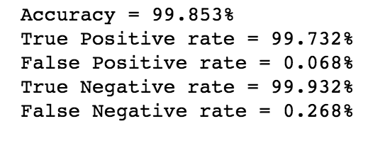
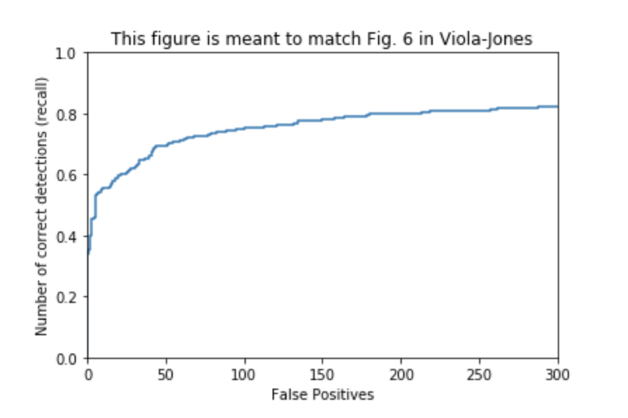

Project 4: Scene recognition with bag of words
For this project, I trained a SVM classifier to detect faces by creating a training set of small window images that contain faces and another negative training set of small images that do not contain any faces. Ultimately, I used a sliding window technique on test images to identify faces in the image through bounding boxes. This report is broken down to the following parts:
- Load Positive and Negative Training Crops
- Train and Evaluate Classifier
- Mine Hard Negatives
- Multi Scale Test Results
- Analysis & Extra Credit
Load Positive and Negative Training Crops
For the positive training set, I iterated through all the images in the train_path_pos directory and appended the hog features found using vlfeat.hog.hog() with the default cell size of 6. This resulted in a final array of N x D where N is the number of image samples and D is equivalent to the (template_size/cell_size)^2 * 31 which in this case is 6713 x 1116.
For the negative training set, I took the image names of all images in the non_face_scn_path directory and threw them into an array. Next I generated a list of random indices that is bounded by num_samples. Furthermore, for every random index, I generated a random bounding box of the size 36 and took the hog feature of this sub_image and appended it to my feature array. Finally, I put a size restriction on the image size of where I am grabbing my random samples because I noticed this was able to improve the accuracy of my results. The features grabbed from the smaller image had less distinct features and were less defined; removing them improved my baseline accuracy. In the end, an array of N x D again is generated where N is bounded by the num_samples and D is equal to the D from the positive training features.
Train and Evaluate Classifier
With my training data now created, I was now able to train my LinearSVC classifier. I appended the positive features with the negative features and created a label array with the size of the number of positive features using 1 appended with the size of the negative features with -1. I tested my SVM with multiple C values. I found that a higher C actually improved the accuracy of my SVM.
| C | Accuracy |
|---|---|
| 1e-5 | 60.514% |
| 1e-4 | 97.741% |
| 1e-3 | 99.171% |
| 1e-2 | 99.641% |
| 1e-1 | 99.859% |
| 1 | 100% |
Because a C value of 1 was most likely overfitting and I was getting convergence warnings, I decided to use a C of 1e-1. The following confidences were produced as a result along with a visualization of the hog features which resembles a face.
As seen from the above graph, a confidence level above -2 had a chance of being classified as a face. This will help later to determine threshold for my project.
Mine Hard Negatives
Similar to mine random negatives, I again found a list of random features from the non_face_scn_path. But this time I wanted to return features that returned false positives classifications, meaning predictions that classified non faces as faces. In order to do this, I took the confidences of the hog features using the svm.decision_function(). Anytime the prediction was greater than 0 (since from the confidence graph we can see that faces had a confidences of greater than 0) and the prediction did not equal the label_vector element I had a false_positive classification feature. Using 10000 random images roughly generates 5-18 hard negatives which roughly corresponds to the false negative rate determined from the previous part of the report of .068%.
Adding the hard negatives to the original training set and retraining another svm yielded almost the exact accuracy across the board for all C values. In this case it yielded a slightly lower negligable accuracy of 99.835% for the 1e-1 C value.
Multi Scale Test Results
For this part of the project I implemented run_detector. I first loaded all the images in grayscale for all images in the test directory. I then iterated through sub_images in the image using a step size of 9 (mainly because at step 6, the code was taking too long to run and anything above 11ish, I am sacrificing a lot of recall) and created hog features of the sub image and appended them in an array along with a separate array that stored the x and y coordinates of the sub image. I repeated this step for all scales that decremented by .9 of the previous scale. The coordinates of the bounding box were also handled by dividing the coordinate by the current scale. Ultimately, confidences were found for all features of the current image and sorted. The confidences below the threshold -1.5 were removed (which are non-faces) and the top 500 values were passed to the non_max_supression equation to remove duplicate values and finally valid boxes were returned. The following precision and recall graphs were generated with .9 to .9^17 scales:
The hard negatives graphs are below which demonstrate a higher precision compared to random negatives above

The average precision was slightly higher for the hard negative SVM despite the svm_2 being of slightly less accurate than the base svm. Using Multiple Scales greatly improved precision and recall from a single scale demonstrated below:
I believe the 'topk' parameter had a huge impact on the recall parameter because at lower values of 'topk', just not enough faces were being detected which returned low recall values. This is demonstrated in the graphs below for 'topk' values of 15, 50, and 100 for the base svm model.
15 topk C val
50 topk C val
100 topk C val
Meanwhile, varying C values of SVM greatly affected precision of the classfier.
1e-2 C val
1e-3 C val
1e-4 C val
1e-5 C val
Lastly, different number of .9^n scales affected the recall
5 scales
10 scales
15 scales
Analysis & Extra Credit
For Extra Credit, I increased the number of training samples by flipping the images by reflecting it through the vertical axis. My reasoning is that flipping a face across is still a face but the features are distinct enough that it could potentially provide additional useful information for the SVM. I created a method called generateFlippedPositives() which essentially iterates the images in the train_path_pos dir and iteratively exchange the column values for every row. .JPG files as a result were saved in the new directory. Ultimately, an additional 6713 training sample was created. The SVM accuracy proved to be similar in terms of accuracy but mainly because the original base svm's accuracy was already so high. The precision and recall accuracy however was increased.
My main takeaway for this project was that overall accuracy of a model can be improved by either precision, recall, or both. However, there comes to a point where you're sacrificing precision by attempting to increase recall or you're sacrificing recall in an attempt to increase precision. The primary method that I used to increase precision was by tuning the C parameter in the SVM classifier. The C parameter controls the degree of misclassification of the model. Smaller values of C will cause the optimizer to look for a larger-margin that separates the hyperplane at the expense of the plane misclassifying more points. Furthermore, the threshold also contributes towards the precision of a model. Upon visualizing the graph of the SVM where confidences > 0 tend to be classification of faces, the higher I set the threshold, the higher chance that the bounding boxes are more likely to be faces; of course at the expense of less features.
Subsequently, recall was mainly controlled by the number of topk values, number of scales, and the size of the window and step size when searching for the features in the test images. Through different number of scales, more smaller faces were able to be picked up by the sliding windows. By increasing the topk value, more boxes were passed into the non_maxima_suppression algorithm to be considered. This could greatly improve the number of recall if a particular high confidence face in an image is being detected on multiple scales which would 'eat up' all the topk array spaces that are being considered. Meanwhile, decreasing the step-size and window-size would greatly improve the number of features to be considered in an image but at the expense of very long run-time; of course, topk would most likely have to be increased to handle the increase inflow of features.
Furthermore by adding 'hard' negatives into the training sample helps the SVM by specifically targeting features that could potentially be misclassified. Because of the low rate of false positives for this project, the downside of doing this is training time. When finding hard negatives, I had to loop over 10000 random samples to find only 5-20 false positive features.
Lastly, I ran my algorithm on the classroom test data to produce the results below. My project was able to perform well on the larger images. For smaller images, it was finding too many false positives. I believe this is due to the size of my 36 window. The accuracy may be improved if I used a smaller window. Due to the size constraint of 5MB for this project, I was only able to present one of my findings, a class image with too many false positives.